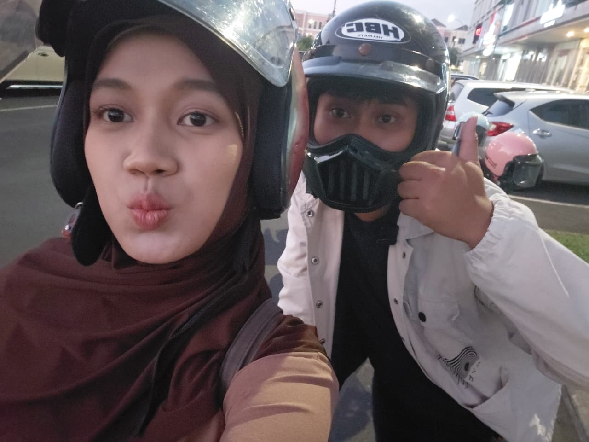
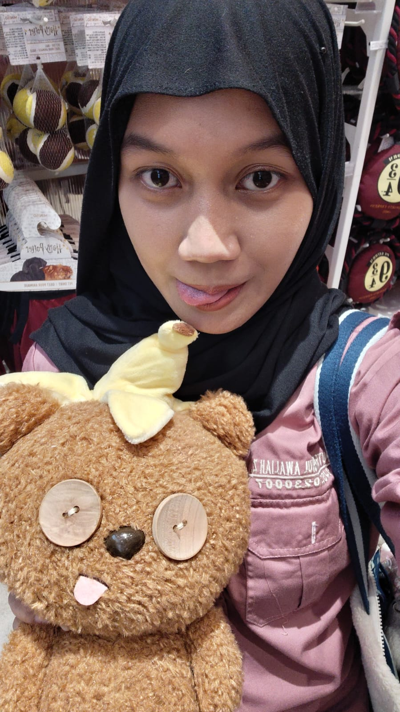
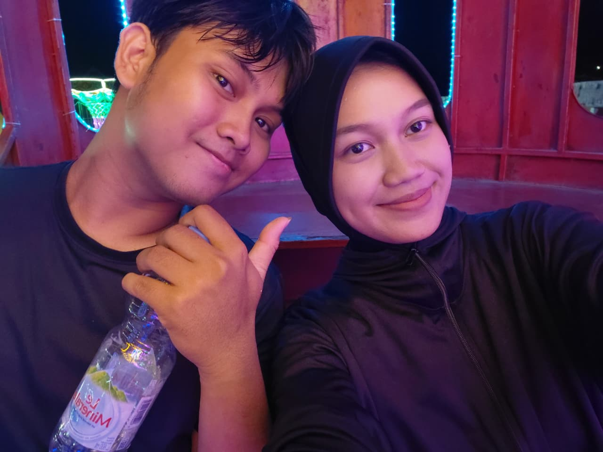
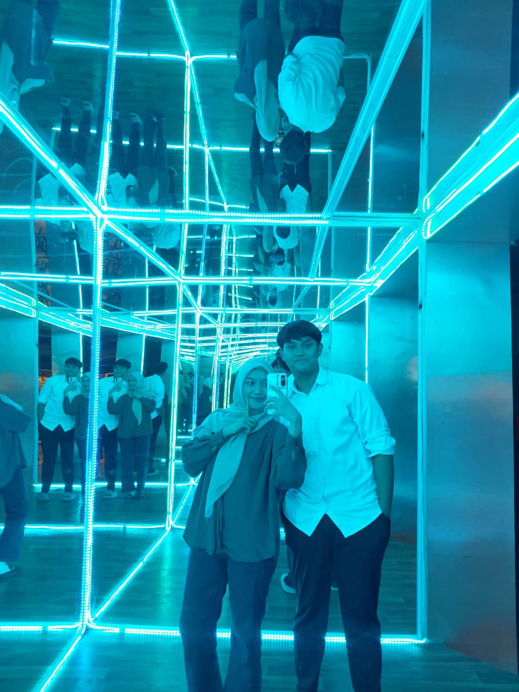
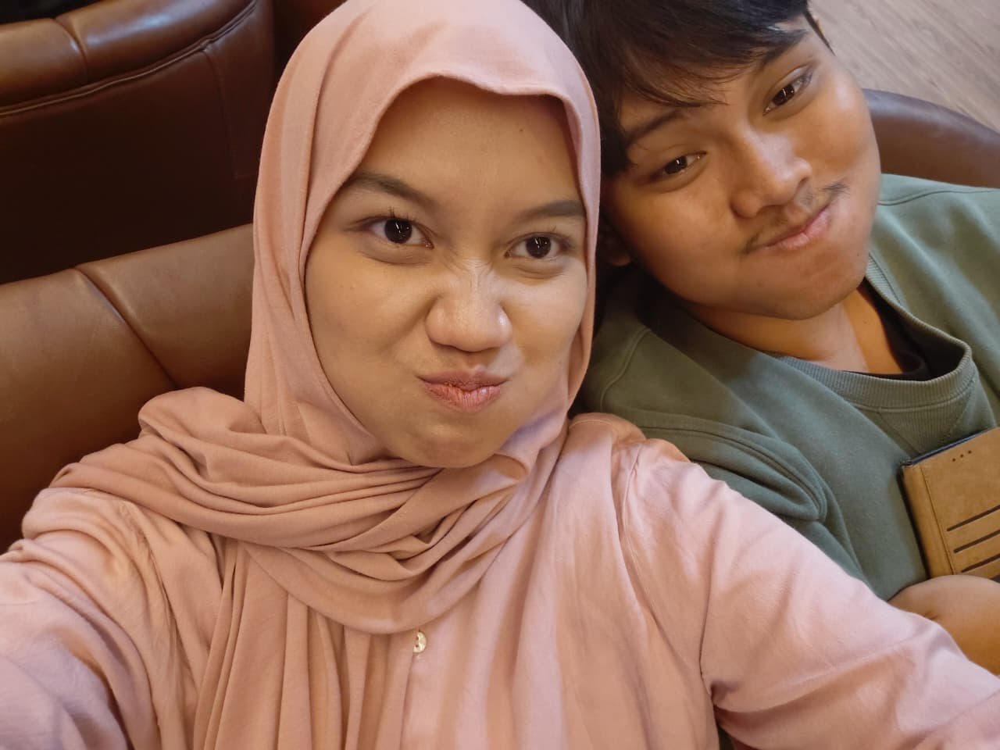

Putri Melati
& Kapibara Tengah Malam
Sebuah cerita bergambar untuk Sayang 💖
Nyalakan suaranya, lalu geser halamannya ya 🎧
untuk Sayang tersayang
Dari Pangeranmu yang lagi nyesel banget
Baca dulu yaa ↓Halo Sayang yang paling aku sayang,
Dear byy...
Kmu ingat waktu pertama kali kita ketemu,
waktu kita nonton film horor bareng..
yang dimana saat itu kupikir mungkin kmu akan sama seperti
wanita-wanita yang pernah kutemui sebelumnya..
namun ternyata aku salah,
kmu malahan membuat perasaan itu tumbuh lagi,
yang kupikir kapan yahh perasaan itu akan muncul lagi..
perasaan akan disayangi, dicintai, dihormati, dihargai byy..
hmmm....
Terimakasih byy kmu sudah ada didunia inii,
Terimakasih kmu mauu menemui ku dari awal kita nonton film bareng kemarin,,
Terimakasih kmu mau menerima semua kekurangan dan kelebihan ku
Terimakasih sudah mau tetap bersama dan menemani ku mulai hari ini hingga nanti..
Terimakasih sudah mau menerima semua kesalahan ku,
ahh-aku sekali lagi ingin mintaa maaf sudah membuat kmu marah, kecewa,
sedih, dan mungkin sampai kmu menangis tersedu-sedu atas kejadian sebelumnya...
aku, Rafi, akan berjanji akan selalu menemani, membersamai, menghargai,
mendukung semua pilihan dan rencana baik yang akan kmu lakukan hingga akhir memisahkan kita byy..
byy, Rafi Love Byy So Much 🫶🏼💞💞🤗
Dengan penuh cinta,
Pangeranmu 🤴💕
Karena setiap foto ini bikin aku makin sadar, kamu itu berharga banget buatku.





(Centang semua kalau kamu setuju ya 😚)
Aku janji bakal jadi lebih baik lagi. Aku sayang kamu banyak-banyak!
Pangeranmu 🤴💕